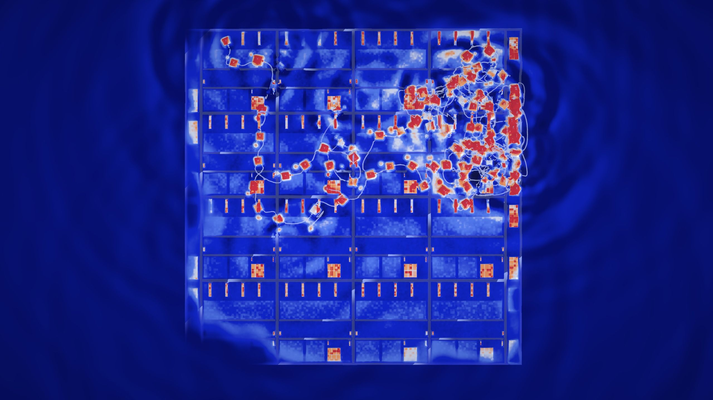

Architect Labs утверждает, что его агенты самостоятельно прошли весь путь: компилятор, система команд, архитектура, микроархитектура, RTL, верификация и финальный GDS-макет — без готовой человеческой архитектуры в основе. Компания называет это «нулевыми архитектурными представлениями»: агенты сначала читали статьи и бенчмарки, строили модели на Python, а затем выбрали одну концепцию для развития. Выбор пал на interaction nets — модель вычислений 1990 года, где программа представляется графом узлов, а вычисления идут переписыванием пар связанных узлов.
Ключевая идея в том, что параллелизм зашивает не «железо», а сама программа: пары узлов переписываются независимо, порядок не важен, а каждое значение используется ровно один раз. Это позволяет обойтись без гигантских общих кэшей и когерентности — вместо них у каждого из 16 тайлов маленькая локальная память. В финальном макете дизайн работал на 500 МГц (на раннем синтезе — 800 МГц), а по производительности на площадь кластер, по словам компании, превосходит эталонный core в 8,77 раза.
Спецификацию агенты писали не по-английски, а на собственном языке ASL, который переводится в Lean — систему машинных доказательств: это отсекает целый класс ошибок и мешает агентам «подкручивать» метрики. Первая генерация — 141-страничный PDF с моделью программирования и оценками — отправилась в мусор: половины цифр физически не существовало. Быстрая модель чипа работала примерно в 200 раз быстрее симуляции RTL, а оценку энергопотребления автоцикл довёл с погрешности почти 250% до 5%. Рои агентов перепробовали 58 идей, оставили 37 — и, как подчёркивает компания, в поведении чипа проявился приём work stealing (перехват задач простаивающим тайлом), который человек не задавал никогда.
Цифры получены на симулированном 7-нанометровом дизайне: кремния нет, сравнительный core компания из юридических соображений не раскрывает. В ближайшие месяцы обещают честные сравнения на SPEC и PARSEC, включая широкие внеочередные процессорные ядра. Это уже второй проект Architect Labs: летний ускоритель Redwood для роботов и дронов ИИ собрал за две недели, но он пока живёт на FPGA. В планах — FPGA-площадка для всех желающих, предварительная ОС и открытая публикация RTL и системы команд.
Российских проектов, где бы ИИ генерировал архитектуру процессора с нуля, по открытым официальным источникам нет: отечественное процессоростроение идёт классическим путём на базе RISC-V.